Overview
The Martinos pseudoCT package generates a subject-specific attenuation map from a T1-weighted MPRAGE image using the atlas-based method described by Izquierdo-Garcia et al.
It is intended for PET/MR attenuation-correction workflows at the
Athinoula A. Martinos Center for Biomedical Imaging. MPRAGE input
can be supplied either as the original DICOM series or as a
preprocessed NIfTI image (.nii or
.nii.gz).
For normal subject processing, use the Local MATLAB (Current) profile.
Reference
D. Izquierdo-Garcia, A.E. Hansen, S. Förster, D. Benoit, S. Schachoff, S. Fürst, K.T. Chen, D.B. Chonde, and C. Catana. An SPM8-based Approach for Attenuation Correction Combining Segmentation and Non-rigid Template Formation: Application to Simultaneous PET/MR Brain Imaging. Journal of Nuclear Medicine. 2014;55(11):1825–1830.
Software acknowledgement
In addition to citing the methodological publication above, work using this tool should acknowledge Michele Scipioni, PhD, for development, integration, and maintenance of the Martinos pseudoCT software.
Software location and versions
PseudoCT is deployed at:
/usr/pubsw/packages/mrpet/standalone_apps/PseudoCT/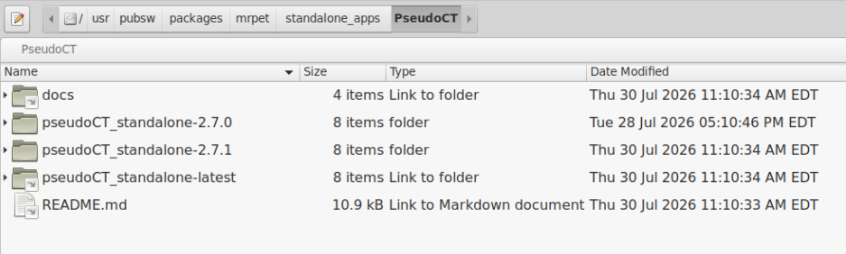
pseudoCT_standalone-latest link to the current
recommended release.
Which version should I use?
For a new subject or a new study, users should normally use
pseudoCT_standalone-latest.
If processing for a study will take place over an extended period, select a specific numbered release and use the same version for the entire study. This maintains software-version consistency across the dataset.
New versions will be deployed regularly to add functionality or fix minor issues. If a problem is discovered that makes continued use of an older version inadvisable, that change will be explicitly communicated and motivated.
Quick start
-
Add pseudoCT to the MATLAB path.
addpath('/usr/pubsw/packages/mrpet/standalone_apps/PseudoCT/pseudoCT_standalone-latest') -
Run pseudoCT.
run_pseudo_CT - Select Local MATLAB (Current) for routine processing.
- Select the first DICOM of the MPRAGE series, or select the single preprocessed NIfTI file.
- Confirm that the UMAP has been found automatically.
- Leave the automatic MPRAGE correction options enabled unless you have a specific reason not to.
- Click OK and keep MATLAB open until the run finishes.
- Inspect both the TIFF fusion image and the final DICOM pseudoCT before using it for attenuation correction.
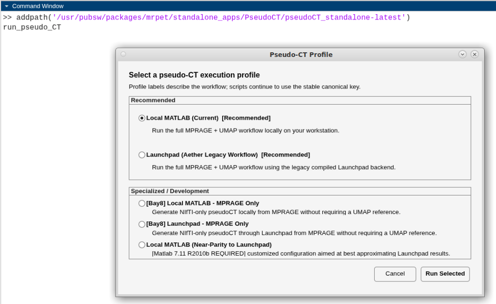
run_pseudo_CT, then choose an execution profile.
It is recommended to run pseudoCT from a working directory close to the data rather than changing into the software installation directory.
To pin processing to a numbered release, use that directory explicitly:
addpath('/usr/pubsw/packages/mrpet/standalone_apps/PseudoCT/pseudoCT_standalone-<version>')Execution profiles
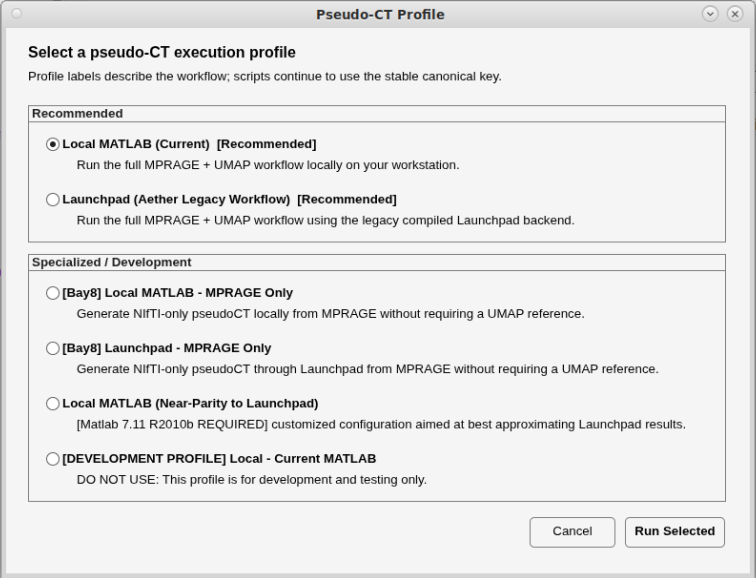
Local MATLAB (Current)
RecommendedRuns the full MPRAGE + UMAP workflow locally on the workstation using the current Martinos MATLAB environment. This is the recommended profile for routine processing.
On an average workstation, expect approximately 30 minutes per subject.
Launchpad (Aether Legacy Workflow)
Currently unavailableThis is the historical compiled backend. Launchpad is currently unavailable and will be replaced by an MLSC-based workflow.
For remote Launchpad/MLSC execution, total turnaround also depends on queue wait time.
Additional profiles exist for specific systems, validation work, compatibility testing, and development. They are intentionally not documented on this operator page.
If you do not already know why you need a specialized profile, do not select one.
Preparing the input data
The standard PET/MR workflow requires a T1-weighted MPRAGE and a corresponding UMAP. PseudoCT supports either the original MPRAGE DICOM data or a preprocessed MPRAGE NIfTI.
DICOM MPRAGE
The minimum required folder structure is:
<subject>/
└── MR/
├── MPRAGE/
└── UMAP/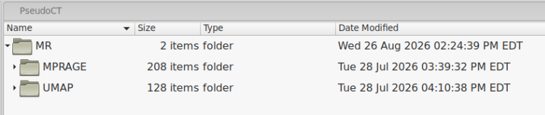
When selecting the MPRAGE, choose the
first DICOM file of the MPRAGE series. The
MR_PET folder does not need to exist before processing;
pseudoCT creates it.
Preprocessed NIfTI MPRAGE
If preprocessing is needed, place the resulting .nii or
.nii.gz image in <subject>/MR_PET/.
The original MR/MPRAGE and MR/UMAP folders
may remain in place.
<subject>/
├── MR/
│ ├── MPRAGE/
│ └── UMAP/
└── MR_PET/
└── preprocessed_mprage.nii.gz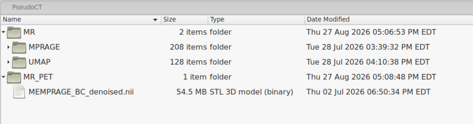
In some subjects, noise in the image background can interfere with segmentation and can ultimately produce spurious tissue-like attenuation values outside the head. Background cleanup may be useful in those cases. A dedicated preprocessing tool is planned for release.
Single-subject workflow
After selecting Local MATLAB (Current), the Load Images dialog is shown.
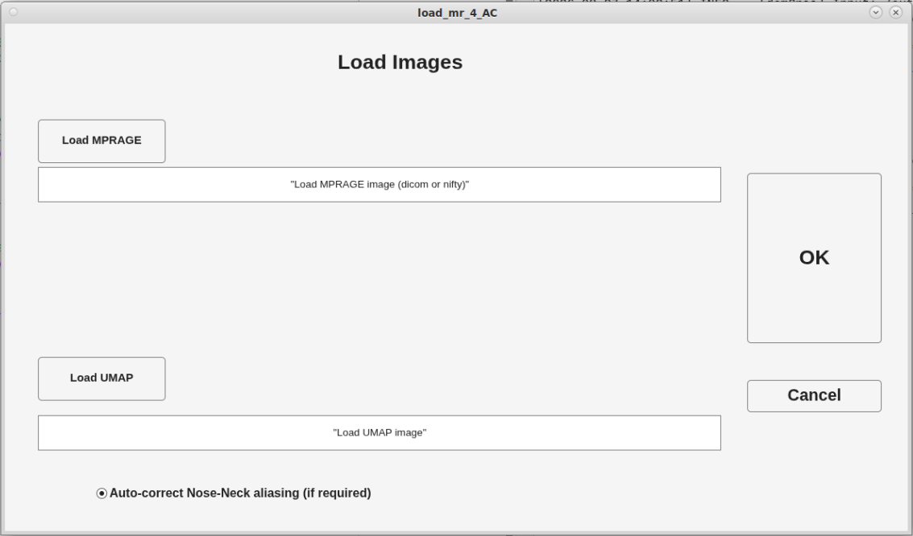
1. Load the MPRAGE
Click Load MPRAGE. For DICOM input, select the
first file in the MPRAGE series. For NIfTI input, select the single
.nii or .nii.gz file.
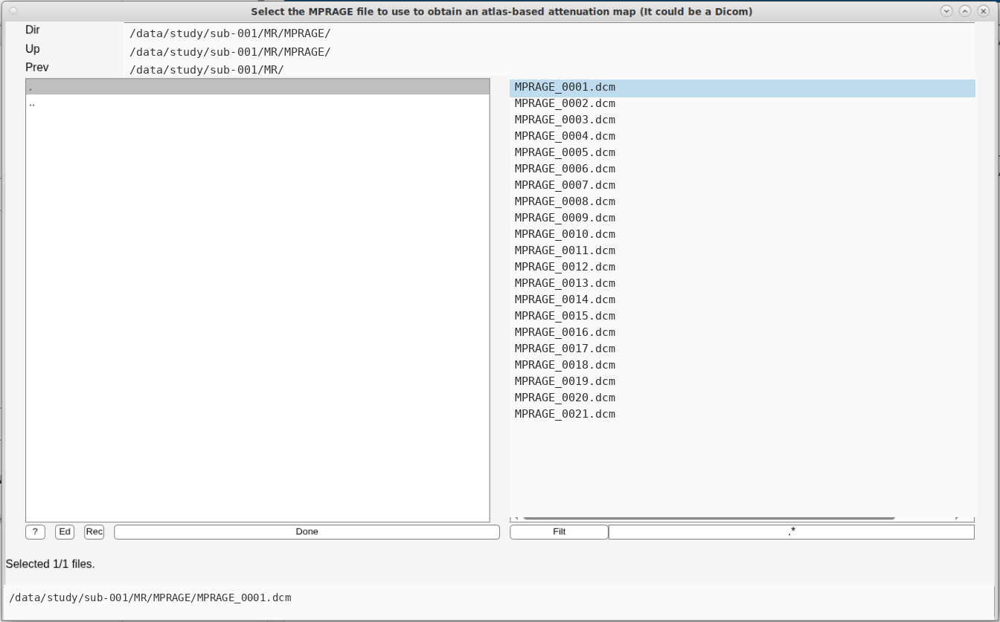
2. Confirm the UMAP
When the expected directory structure is present, pseudoCT
automatically searches the sibling MR/UMAP folder and
populates the UMAP field. In normal use, you should not need to
click Load UMAP manually.
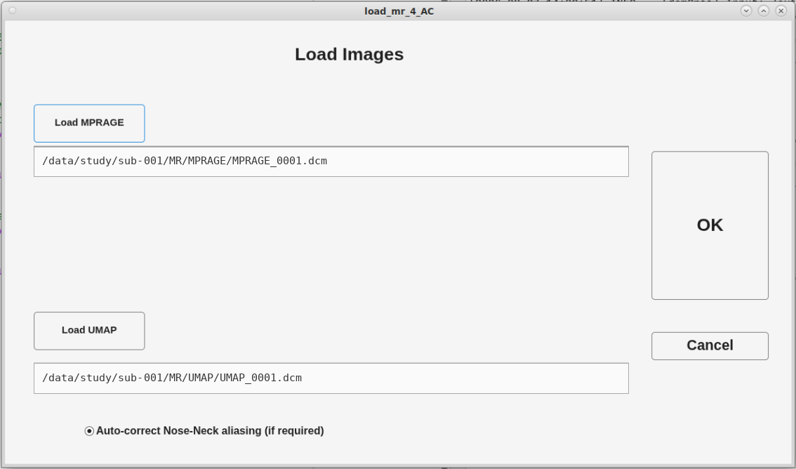
3. MPRAGE correction options
PseudoCT can apply automatic preprocessing to improve segmentation and registration to the MNI atlas, including correction of nose/neck wrap-around aliasing and recentering of the brain within the field of view.
Leave automatic aliasing correction and recentering enabled. The application determines whether a correction is actually required, so leaving these options ON is the preferred approach in most cases.
The preprocessing controls are currently being revised, so their exact appearance may change between releases.
4. Start processing
Once the input paths are correct, click OK. MATLAB must remain open for the duration of the run.
Batch processing
Multiple subjects can be selected in one run using the batch file picker:
run_pseudo_CT('profile', 'local-current', 'subjects', 'batch')Select the first MPRAGE DICOM for each subject (or the desired NIfTI input for each subject), then click Done. PseudoCT processes the selected subjects sequentially and discovers each subject's UMAP from the expected folder structure.
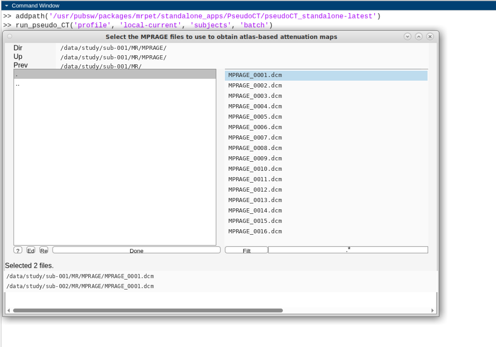
For a long-running study, run the batch with the same numbered pseudoCT release used for the rest of the study rather than switching versions midway through processing.
During processing
Local execution takes approximately 30 minutes per subject on an average workstation. The exact time depends on the workstation and input data. Remote execution additionally depends on queue wait time.
MATLAB prints stage-by-stage status messages and writes a detailed
run log in
MR_PET.
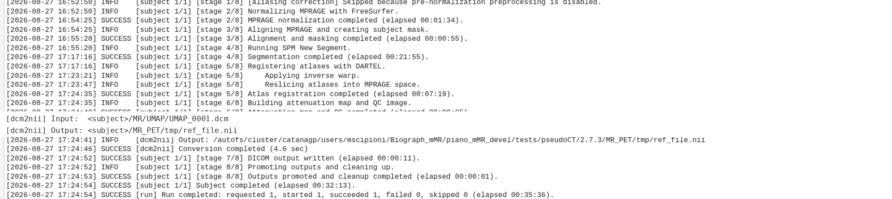
Interrupting a run
It is safe to interrupt pseudoCT, but interruption stops the current processing run. Intermediate files generated up to that point are retained.
Starting pseudoCT again for the same subject restarts processing from the beginning and overwrites existing processing files as needed.
Closing MATLAB or interrupting execution stops the pseudoCT run.
Outputs
PseudoCT creates the required output directories automatically. After a successful Local MATLAB run, the subject directory contains:
<subject>/
├── MR/
│ ├── MPRAGE/
│ ├── UMAP/
│ └── pseudo_muMAP/
│ └── final DICOM pseudoCT series
└── MR_PET/
├── att_map.nii
├── Fusion_MR_Pseudo_CT_validation.tiff
├── MPRAGE_spm.nii
├── MPRAGE_spm_normalized.nii
├── Pseudo_CT_AC_Version.txt
├── pseudo_CT_local-current_*.log
└── pseudo_CT_profile_summary.txt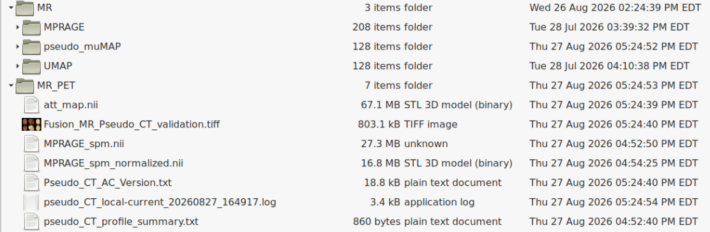
MR/pseudo_muMAP/
The final pseudoCT is written here as a DICOM series for downstream PET/MR use.
att_map.nii
The final pseudoCT attenuation map in NIfTI format.
Fusion_MR_Pseudo_CT_validation.tiff
QC image used to inspect MPRAGE/pseudoCT coregistration.
pseudo_CT_local-current_*.log
Detailed processing log for the subject.
pseudo_CT_profile_summary.txt
Concise provenance record of the selected profile, important settings, and MATLAB environment.
Pseudo_CT_AC_Version.txt
Records the pseudoCT software version and associated release history.
Profile provenance
The profile summary is useful when checking or reporting exactly how a subject was processed.
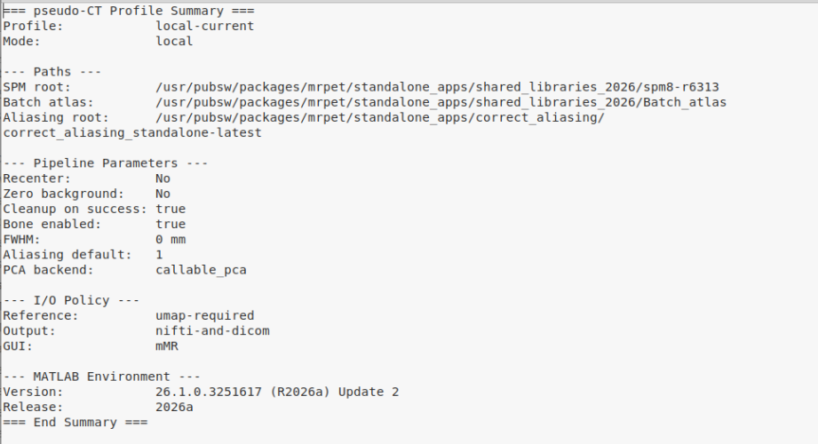
pseudo_CT_profile_summary.txt from a Local
MATLAB run.
During processing, intermediate files are staged under
MR_PET/tmp/. On a successful run this temporary
directory is cleaned up. If processing is interrupted, intermediate
files are retained.
Quality control
Every generated pseudoCT should be visually inspected before it is used for PET attenuation correction. QC has two parts: coregistration review and direct inspection of the final attenuation map.
1. Check MPRAGE / pseudoCT coregistration
Open Fusion_MR_Pseudo_CT_validation.tiff from
MR_PET. Inspect the overlaid MPRAGE and pseudoCT in all
displayed orientations.
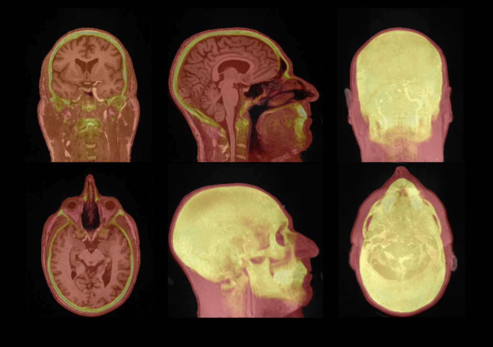
Look for:
- consistent alignment of the pseudoCT with the MPRAGE anatomy;
- agreement of the skull and brain contours;
- reasonable alignment around the nose, sinuses, and posterior head;
- no gross atlas-registration mismatch;
- no missing, displaced, or obviously distorted skull regions;
- no obvious failure related to poor positioning of the brain within the field of view.
2. Inspect the final DICOM pseudoCT
Open the DICOM series in MR/pseudo_muMAP/ using a
proper DICOM image viewer and scroll through the entire volume. Do
not rely only on the TIFF fusion image.
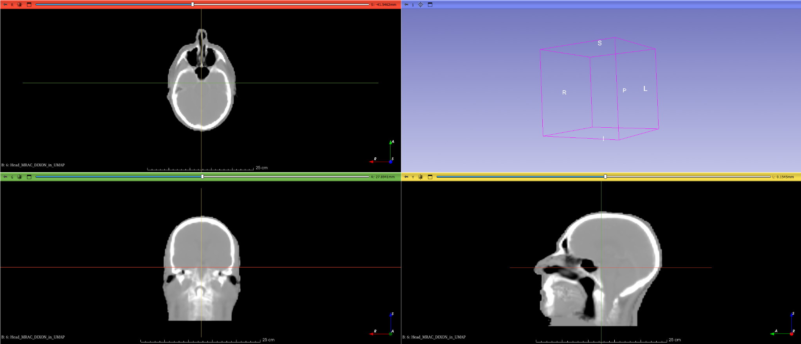
Inspect for unexpected attenuation values or artifacts inside and outside the head. A known failure mode is background noise in the MPRAGE being segmented and classified as soft tissue instead of air, producing spurious tissue-like attenuation in the background.
Do not use the pseudoCT without further review. Clean the MPRAGE
background, save the cleaned image as a NIfTI file under
MR_PET, and rerun pseudoCT. A dedicated
background-cleanup tool is planned for release.
Troubleshooting
| Problem | What to check |
|---|---|
run_pseudo_CT is not found |
Confirm that the actual
pseudoCT_standalone-latest or numbered-release
directory was added to the MATLAB path.
|
| The UMAP field does not auto-populate |
Confirm that the subject contains an
MR/UMAP folder with the correct UMAP acquisition
and that the MPRAGE comes from the expected subject directory.
|
| Processing was interrupted |
Intermediate files may remain under MR_PET. Rerun
pseudoCT; processing restarts from the beginning and
overwrites existing processing files as needed.
|
| MPRAGE and pseudoCT are visibly misregistered | Do not use the result. Verify the selected MPRAGE, inspect positioning, leave the automatic correction options enabled, and rerun. Review the log if the problem persists. |
| Soft-tissue-like attenuation appears in the background |
Inspect the MPRAGE for background noise. Clean the background,
place the resulting NIfTI in MR_PET, and rerun
pseudoCT.
|
| Launchpad does not run | The legacy Launchpad workflow is currently unavailable. Use Local MATLAB for routine processing until the MLSC replacement is deployed. |
Keep the run log, pseudo_CT_profile_summary.txt, QC
TIFF, and software version available. These files usually provide
the most useful first-pass information for diagnosing a failed or
suspicious run.
More information
This page is intentionally an operator guide. Detailed implementation, validation, numerical-parity, release-history, and developer documentation are maintained with the source repository, and can be made available upon request.
Maintainer: Michele Scipioni, PhD — mscipioni@mgh.harvard.edu